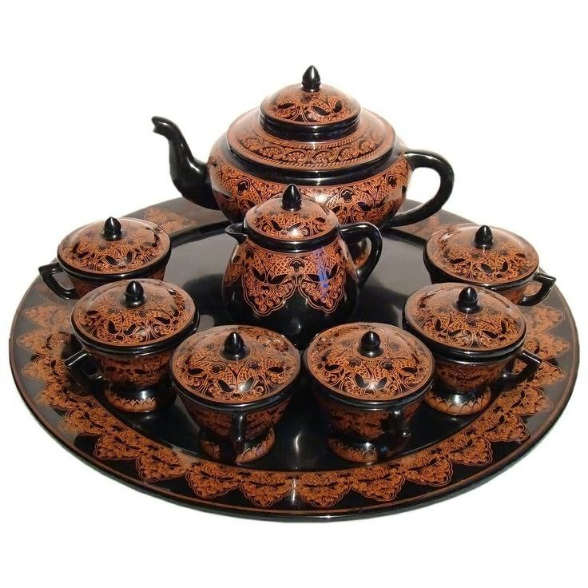
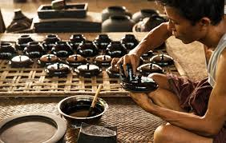
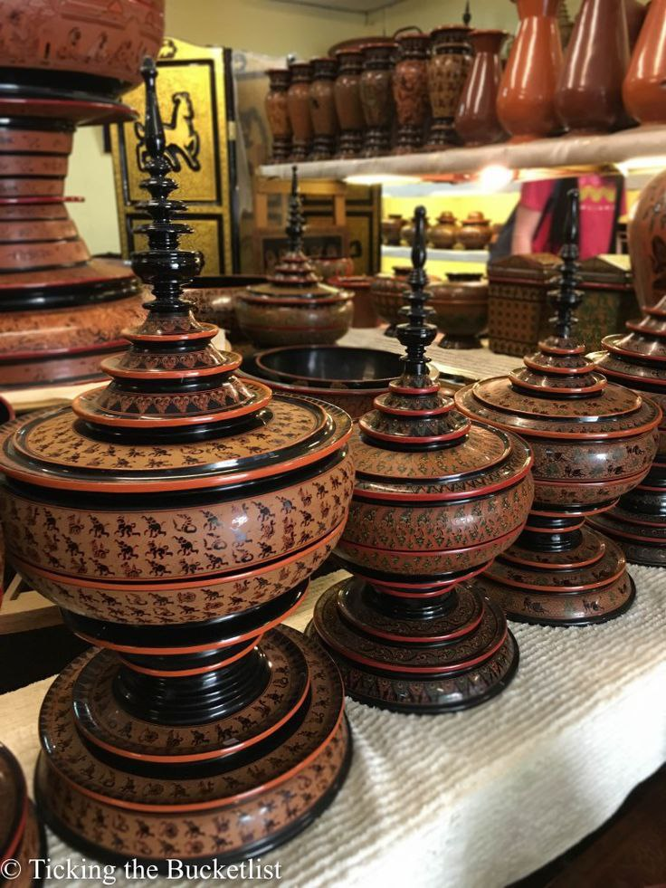
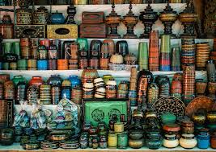

Relief Molded Lacquerware, often called Thayo-Pan or Yun-lone-htwin, is a unique technique where the patterns are raised from the surface to create a three-dimensional effect. Unlike etched lacquer, this style uses a thick lacquer paste to mold figures, flowers, and mythical creatures, making the artwork physically stand out. It is highly valued for its texture and the lifelike quality of its designs.

The artisan creates a thick, clay-like paste by mixing raw lacquer (Thit-si) with fine ash (from cow bone or teak wood) or sawdust. This mixture is flexible when wet but becomes rock-hard when dry.
Small amounts of Thayo are rolled into thin threads or tiny balls. The artisan then carefully applies these onto the lacquer surface to build up figures layer by layer. For complex designs like lions or dragons, specific parts are molded separately and then attached to the main piece.
While the Thayo is still semi-firm, the artisan uses small wooden or metal tools to carve fine details like scales on a dragon or petals on a flower. This requires a very steady hand and a keen eye for anatomy and symmetry.
Once the molding is complete, the piece is dried thoroughly. It is then coated with a final layer of high-quality lacquer to seal the design. Sometimes, gold leaf is applied over the relief to create a "Gilded Relief" effect.

Relief molded lacquerware is often seen on decorative items like large wall plaques, ornamental vases, and ceremonial boxes (Kun-it). The themes usually include Myanmar folklore, mythical creatures like the Garuda or Naga, and intricate floral scrolls.

Bagan Workshops: Expert workshops in Bagan (such as U Ba Nyein) are the best places to find master-level relief work.
In Mandalay,Arts and Craft Centers are specialize art centers often sell these.